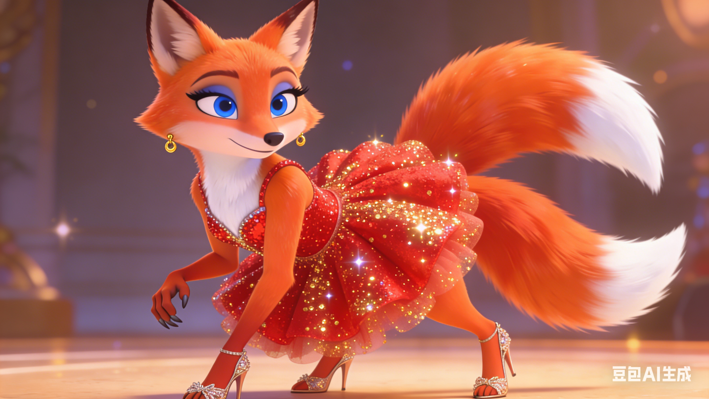

Taylor in Zootopia
I asked several large language models—including ChatGPT, Gemini, and Doubao—to imagine what Taylor Swift might look like if she existed inside the world of Zootopia: If Taylor Swift were in Zootopia, which animal would represent her, and what would she look like? Using the visual style and character design language of Zootopia, generate an animal version of Taylor Swift. The character should clearly evoke her identity while fitting naturally into the Zootopia world. She should be wearing an outfit inspired by one of her Eras Tour costumes, adapted to suit the chosen animal and the film’s aesthetic.
Across models, without any coordination or shared context, they all independently selected the same animal: a fox.
ChatGPT

The fox fits best because, within the Zootopia design language, it encodes the same traits that define a modern pop icon’s long-term appeal—without feeling forced or symbolic in a fantasy way.
Narrative intelligence, not brute power In Zootopia, foxes represent wit, strategy, and social navigation rather than physical dominance. That aligns with a singer known for lyrical storytelling, narrative control, and outmaneuvering critics through writing and reinvention rather than shock or spectacle.
Reinvention baked into the species Foxes already carry an archetype of adaptability and shape-shifting identity (“sly,” “clever,” “hard to pin down”). That maps cleanly onto the idea of distinct musical eras—each different, but clearly the same core character underneath.
Stage presence without aggression Predators like lions or wolves read as overpowering in Zootopia. A fox reads as charismatic and magnetic without intimidation—commanding attention through confidence, posture, and expression. That matches a performer whose dominance comes from presence and control, not volume or menace.
Visual compatibility with fashion Fox anatomy works extremely well for elegant, tailored stage costumes:
- Long limbs → statuesque silhouettes
- Tail → dynamic motion on stage
- Facial structure → expressive, camera-friendly emotions This makes Eras-style outfits feel natural rather than gimmicky.
Fits the world, doesn’t break it Crucially, foxes already exist in Zootopia as everyday citizens. Choosing a fox lets the character feel like a believable star within the city, not a mythic outlier. She looks like someone who rose to fame in that world, not someone imported into it.
Gemini

The choice of a Red Fox to represent Taylor Swift in the Zootopia universe was a deliberate design decision based on a few key intersections between her persona and the animal’s archetype in that specific world:
1. Visual Synergy (The “Golden” Aesthetic)
In character design, color palette is crucial. Taylor Swift is iconically associated with blonde hair and often red lips. The Red Fox is the only animal in the Zootopia lineup that naturally possesses that “Golden/Red” palette.
- Translation: Her blonde hair translates perfectly into the golden-orange fur of a fox.
- Silhouette: Foxes are lithe, tall, and agile. This mirrors Swift’s statuesque height and her energetic stage presence, unlike stockier animals (bears) or smaller rodents.
2. The “Mastermind” Archetype
In folklore and Zootopia, foxes are symbols of cunning, wit, and intelligence.
- Songwriting: Swift is renowned for her sharp, witty lyrics and “Easter eggs”—puzzles she leaves for fans. This fits the “clever fox” archetype who is always one step ahead.
- Business Acumen: Like Nick Wilde, who knows the ins and outs of the city, Swift is known for her business intelligence and strategic career moves (the “Mastermind”).
3. Narrative Parallels (Reputation)
A core theme in Zootopia is how foxes are unfairly stereotyped as “sneaky” or “untrustworthy” (predators), only to prove they are complex individuals.
- Media Narrative: Swift has famously dealt with media narratives painting her as a villain or “snake” (the Reputation era). Assigning her a “Predator” species like a Fox—rather than a “Prey” species like a bunny or sheep—acknowledges that edge. It fits a character who has been misunderstood by the public but reclaimed her own narrative.
4. Why not a Cat?
While Taylor Swift famously loves cats, in Zootopia, the “big cats” (Tigers/Lions) are usually portrayed as bulky muscle (like Mayor Lionheart or the dancers), and domestic cats aren’t typically the main anthropomorphic citizens. The Fox offers the perfect balance of feline elegance (agile, sharp features) with canine charisma, making it the best fit for a pop megastar in this specific universe.
豆包Doubao

Choosing a fox to represent Taylor Swift in Zootopia ties together her public persona, the film’s thematic core, and visual storytelling logic—here’s the breakdown:
Zootopia’s fox archetype: Subverting stereotypes In Zootopia, foxes are initially framed as “sneaky” or “untrustworthy” (think Nick Wilde’s opening con artist bit)—but the movie’s whole message is that labels don’t define you. Taylor Swift has long navigated public stereotypes (from “America’s sweetheart” to media-driven narratives that oversimplify her) and redefined her image across eras, just like Nick defies the “fox = trickster” trope to become a hero. The fox becomes a perfect metaphor for her ability to subvert expectations.
The “era” versatility of foxes in design Foxes in Zootopia have a sleek, adaptable look—their fur can shift in tone (warm reds, soft creams) to match different vibes, which aligns with Taylor’s ever-evolving Eras Tour aesthetic. A fox’s slender build also works for translating her stage outfits: whether it’s a sparkly Fearless ballgown, edgy Reputation leather, or cozy Folklore cottagecore, the fox’s frame can carry these looks while staying true to the film’s cartoonish, anthropomorphic style.
Iconic visual parallels Taylor is known for her signature curly/wavy hair and bright, expressive eyes—traits that map seamlessly to a fox’s fluffy red mane (styled to mimic her hair texture) and large, vivid eyes (a key feature in Zootopia character design to convey emotion). The fox’s playful yet sharp energy also mirrors Taylor’s blend of charm, wit, and stage presence.
Narrative fit in Zootopia’s world A fox Taylor would fit right into Zootopia’s diverse ecosystem—she could be a musician performing at the city’s grand theaters (like the Zootopia Concert Hall) or a storyteller weaving lyrics that resonate with animals of all species, just as her music connects with fans across backgrounds. It’s a role that feels organic to both the film’s world and her identity as a songwriter.
Why?
This pattern held even in models that struggled to produce strong visual descriptions, such as Claude and DeepSeek. While their outputs varied in detail and clarity, the animal choice remained consistent.
I then asked Gemini why did multiple, independently trained LLMs arrive at the same symbolic mapping? It provided several inferences:
- The “Smoking Gun” Lyric (The Strongest Data Point) The biggest reason is likely a direct quote from her discography that fits the Zootopia “Predator vs. Prey” theme perfectly. In the song “I Know Places” (from 1989), the chorus explicitly says:
“They are the hunters, we are the foxes / And we run…”
For an AI analyzing text associations, this is a massive, weighted link. The song is about hiding from the media (hunters) and being clever/elusive (foxes). Since Zootopia is also about predators and prey, the models prioritize this lyric as the “canonical” animal identity she assigned to herself.
The Viral Fan Art Incident In 2015, there was a minor internet controversy where Taylor posted fan art of a fox with those specific lyrics. The story was covered by many news outlets (BuzzFeed, rolling stone, etc.). Because AI models are trained on news articles and internet history, they “remember” this event. In their dataset, the concepts “Taylor Swift” + “Art” + “Fox” appear together frequently, making it a statistically probable choice when asked to generate art of her.
Visual Color Theory AIs are trained to match physical traits.
Taylor’s Signature: Blonde hair, red lips, blue eyes.
Animal Match: The Red Fox is the only common animal with naturally “golden/orange” fur (matching blonde hair) that looks aesthetically pleasing with “human” features.
Alternative: A blonde cat is possible (she loves cats), but in Zootopia, cats are usually small or background characters. A lioness (blonde) is too bulky. The fox is slender and tall, matching her silhouette.
- The “Mastermind” Persona In recent years (especially the Midnights era), Taylor has branded herself as a “Mastermind”—someone calculating, strategic, and clever. In the Zootopia universe (and Western folklore), the Fox is the archetype of wit, strategy, and cunning. The AI models analyze her personality traits (business savvy, easter eggs, cryptic hints) and match them to the animal that represents high intelligence.
There is no clear evidence of explicit training data linking Taylor Swift to foxes. There is also no widely recognized cultural meme or official imagery that connects her with that animal. What seems to be happening instead is symbolic convergence. The models draw from broad cultural associations—“fox” as clever, charismatic, and adaptable—and map those qualities onto a modern pop icon archetype. When placed inside Zootopia, that archetype repeatedly resolves into the same animal.
Taylor in my eyes
If I were to choose an animal to represent Taylor Swift, I would choose a lioness.
I once wathced a wildlife documentaries titled Queen, in which the lionesses plan hunts, coordinate the group, protect territory, and sustain the pride’s survival. Their power is structural and collective. They lead through strategy, cooperation, and long-term dominance. That image aligns with how I perceive Taylor Swift’s presence in the music industry: strategic, enduring, commanding loyalty, and willing to assert ambition openly.
Which animal will you choose?